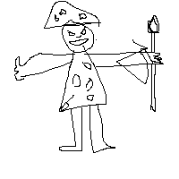

Radavils Journal
by Radas (a.k.a. the Dizi Rascal)
Goals
Short term goal
Help the graveyard crew establish our culinary business
Long term goal
Publish a curated adventure log, so that my bardic feats are remembered through history
Ongoing ventures
- I must save Schmeichel!
- Save or kill the prince, depending on the vibes
- Get this glue off my hand
To do list
- Gather wildflowers
- Re-membrane dizi
- Create dizi chord guide
- Practice
persti prestidigitation
- Get gnome leaf from Jeff
- Finish journal entry on the graveyard
- Feed Schmeichel
- Shopping
Awesome self portrait
My pièce de résistance
